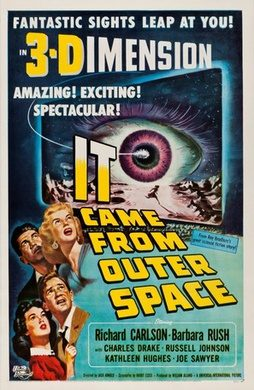

It Came from Outer Space

Starring: Richard Carlson, Barbara Rush, Charles Drake
Director: Jack Arnold
Writer: Ray Bradbury, Harry Essex
Producer: William Alland
It Came from Outer Space is a 1953 American science fiction horror film, the first in the 3D process from Universal-International. It was produced by William Alland and directed by Jack Arnold. The film stars Richard Carlson and Barbara Rush, and features Charles Drake, Joe Sawyer, and Russell Johnson.
Trivia
- The screenplay by Harry Essex, with input by Jack Arnold, was derived from an original and lengthy screen treatment by Ray Bradbury; screen legend says that Bradbury wrote the screenplay and Harry Essex merely changed the dialogue and took the credit.
- Unusual among science fiction films of the era, the alien "invaders" were portrayed by Bradbury as creatures stranded on Earth and without malicious intent toward humanity.
- Bradbury said "I wanted to treat the invaders as beings who were not dangerous, and that was very unusual." He offered two story outlines to the studio, one with malicious aliens, the other with benign aliens.
Filming Locations
- California
- Filming took place on location in and around the California towns of Palmdale, Victorville, and the Mojave Desert, as well as on Universal's sound stages.
Previous Showings
2 Runs • 2 Festivals
All runs on record (2):
- May 5 - 11, 20003D Film Festivalw/ Creature from the Black Lagoon
- June 5 - 8, 2010Spring 2010w/ The Day the Earth Stood Still